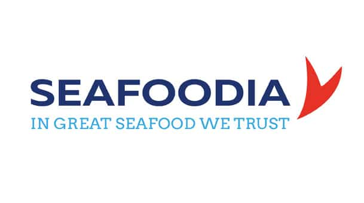
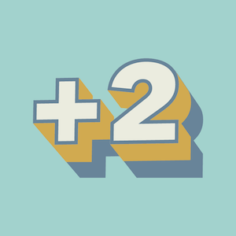
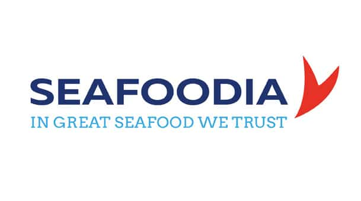
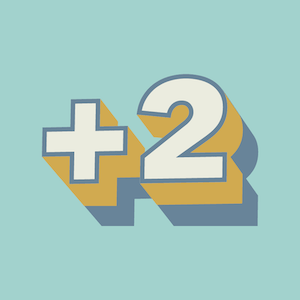

La Plateforme_ est une école du numérique et des nouvelles technologies
co-fondée avec le Club Top 20 réunissant les grandes entreprises de la
Métropole Aix Marseille. Elle comprend une offre de formations diversifiées
destinées à former des codeurs et développeurs web, des ingénieurs spécialisés
en Intelligence Artificielle, et des cadres d’entreprises au travers de cycles
de formations continues.
La Plateforme_ est membre du programme Grande Ecole du Numérique.
Elle est soutenue par de grandes entreprises du territoire comme
le Crédit Agricole Alpes Provence, par la Région Sud, le Département
des Bouches du Rhône et la Métropole Aix Marseille Provence.
Elle ouvrira ses portes à Marseille dans le quartier de la Joliette
en septembre 2019.

 


